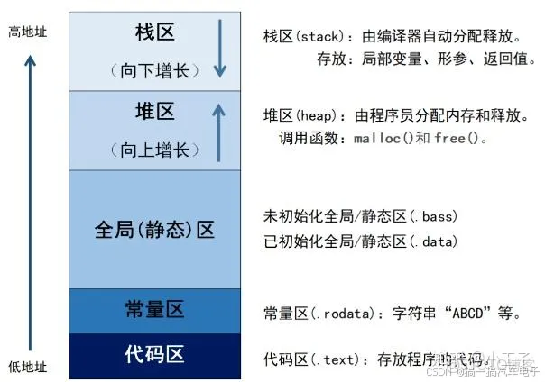

Chapter9 MCU存储架构
存储器
RAM (Random-Access-Memory)
RAM随机存取存储器，是易失性存储器，即断电后存储器内数据丢失，所以计算机或者嵌入式设备掉电后就会丢失原来正在运行的数据。
RAM 通俗叫做 内存/运行内存 ，它的速度要比硬盘快得多，所以程序运行时会用到的数据被存放在RAM中，以便快速读写。而运行时不用的数据则存放在硬盘中，需要时再从硬盘里拿到内存
嵌入式设备的RAM概念和计算机的RAM的概念是相同的，RAM即内存越大，能同时在内存中执行的程序就越多，性能一般是越好的。
ROM (Read-Only-Memory)
ROM只读存储器，是非易失性存储器，即断电后存储器内数据不丢失。
在嵌入式设备中，ROM一般以FLASH的形式出现。其体积够小，容量较大，速度较快，非常适合用作嵌入式设备的大容量存储器。早期的ROM因为技术不成熟所以无法擦写，出厂后就只能读数据，所以叫只读存储器。随着技术的发展，在ROM的基础上出现了新的半导体存储介质EPROM和EEPROM，这种可擦写存储器并不符合ROM的命名，但是由于是在ROM的技术上衍变出来的，所以延用了一部分原来的叫法
由于计算机硬盘与ROM都能够存储数据且断电不会丢失，所以有人就对两者产生了混淆。简而言之，部分硬盘是ROM技术的衍生。硬盘分为两种，一种是机械硬盘（即磁盘HDD）,一种是固态硬盘（SSD），磁盘HDD和ROM没什么关系，但是固态硬盘SSD就不一样了，固态硬盘用到的存储颗粒也是基于NAND FLASH技术，和U盘以及嵌入式设备存储有点相似。
程序与存储关系

栈区、堆区、静态区（RAM）
常量区、代码区（Flash）
MCU不建议使用堆区动态分配
malloc是一种动态分配内存的操作，该操作将会从系统的堆区（heap）中寻找一片大小符合的内存空间分配给程序。对于编程而言显然是有好处的，可以根据程序状态变化动态地申请空间，而不必初始固定一块区域来编程使用。
但对于MCU而言这种操作带来的风险是高于便捷性的。只有极少数特殊场景可以谨慎使用(系统启动时一次性分配，之后永远不释放、不重新申请。需要算好初始化RAM占用，malloc代码必须判断返回值是否为NULL)
malloc 天生不适合 MCU 裸机：没有操作系统、没有内存管理单元（MMU）、资源极度有限。
- 内存碎片：反复申请 / 释放小块内存，会把连续 RAM 拆成无数碎片，最后明明有空闲内存，却申请失败 → 程序直接死机。
- 没有异常处理机制：裸机没有 OS，malloc失败会返回NULL，一旦忘记判断NULL，直接访问空指针 → 硬件死机 / 跑飞。
- 执行时间不确定：malloc需要遍历空闲链表找合适内存，耗时不固定，而裸机通常要求实时性（中断、定时器），会破坏实时性。
- 栈/堆空间冲突风险：MCU 内存极小，栈向下生长、堆向上生长，动态分配一不小心就互相覆盖 → 数据被踩烂。
- 调试困难：内存泄漏、重复释放、野指针…… 裸机没有工具检测，出问题根本找不到原因
裸机开发的正确做法：全部使用静态内存 / 预分配内存，这是工业级裸机开发的铁律
//1 静态数组
uint8_t uart_rx_buf[128];//编译时就确定内存，绝对安全
//2 需要动态对象，但不想用 malloc → 自己做内存池（Memory Pool）
msg_t msg_pool[10];//预先定义好一堆固定大小的对象
uint8_t msg_used[10];//对象占用标识
msg_t *msg_alloc(void) {// 申请/释放都是数组操作，无碎片、速度固定
for(int i=0; i<10; i++){
if(!msg_used[i]){
msg_used[i] = 1;
return &msg_pool[i];
}
}
return NULL;
}
//3 临时小缓冲区直接放栈里，函数内设置局部变量，函数退出自动回收
void func(void) {
uint8_t tmp_buf[64]; // 栈上分配，无需free
}
参考资料
查看存储构成
MDK与IAR，在编译后都会输出一份.map文件，该文件详细描述了工程的内存结构。变量的存放地址、占用大小；函数的存放地址、占用大小；堆、栈地址以及占用大小，一切程序相关的存储信息都会在这份文件中输出。
设置存储结构
对于MCU工程而言，对内存的设置一般包含几个方面：FLASH、RAM起始地址、栈区大小、堆区大小
通常来说这些系统设置会在startup.s的汇编文件中描述存储区域的起始与大小，IAR也可以通过.icf文件来设置存储信息。